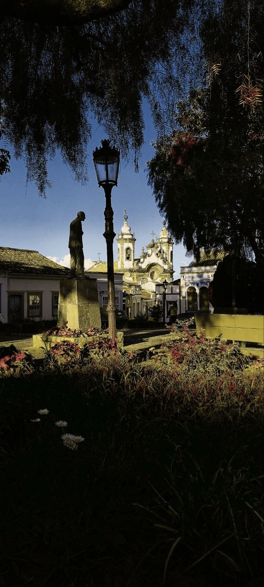
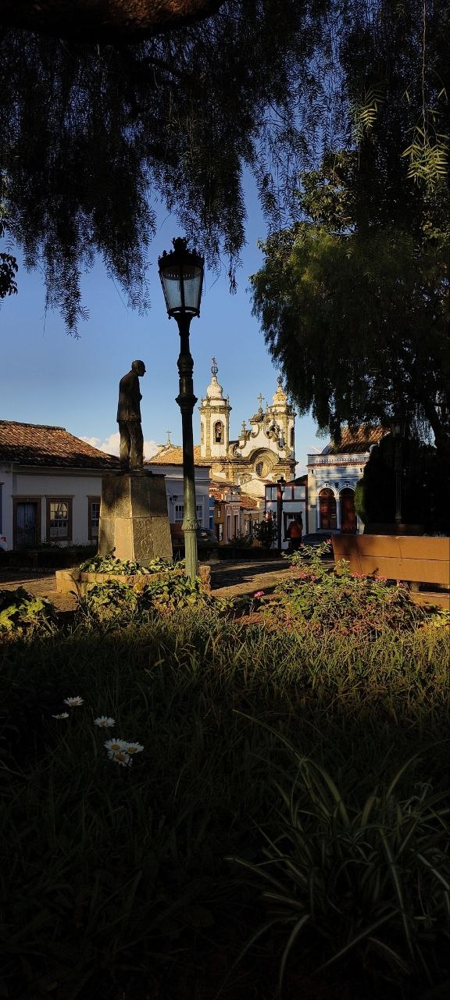
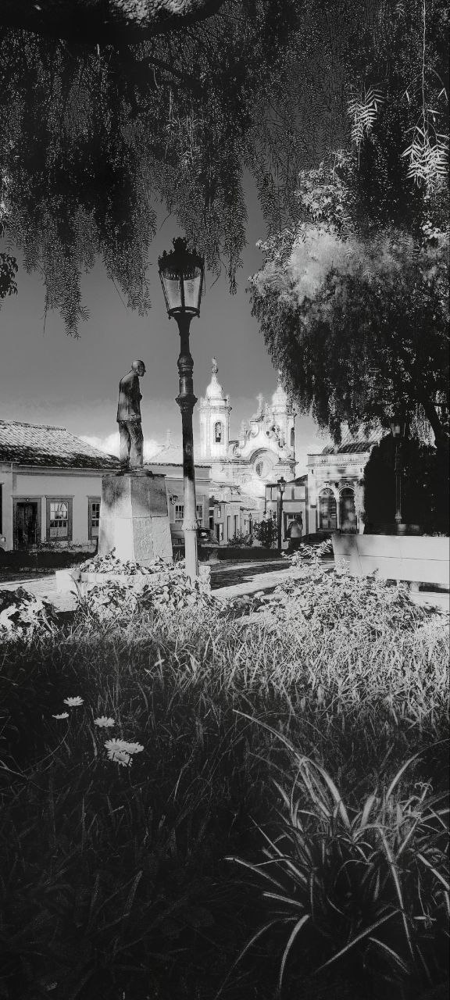

Material, not just colour
The engine tries to distinguish likely foliage, sky, water, skin, stone, glass, and neutral surfaces before applying the look. This prevents one global colour shift from flattening the whole scene.
A photographic experiment, continued
Spectral Camera began with a forgotten roll of Rollei IR 400, bought in 2009 and carried through a lifetime of analogue photography.


A real Minas Gerais frame. No stock imagery. No invented device or preset metadata.
Before the shader, there was film
The year was 2009. I was at university, talking about analogue photography with some friends. Around the same time, a small Lomography store had opened nearby.
The timing was perfect. I had been photographing analogue since I was young. Both of my parents were hobbyist photographers, so film cameras and rolls of film had always been part of my life.
But in 2009 I became absorbed by the cameras, the obscure films, and the feeling that every photograph had a physical history. I started buying Soviet cameras on eBay, along with films as rare as I could find them.
One day I found three rolls of Rollei IR 400 35mm. I bought all three for roughly sixty dollars at the time.
I loaded my Zenit and went camping.
When I came home, I developed almost every roll I had photographed. Almost.
I could not find anywhere to process the Rollei infrared film. So I started researching everything I could learn about infrared photography: exposure, filters, foliage, skies, shadows, and the way infrared film changes the relationship between materials.
The other two rolls eventually became gifts. The first remained undeveloped.
I may still have it somewhere. I have moved many times since then. Perhaps it is hidden in a box. Perhaps it spoiled years ago. Perhaps I will never find it.
A small Lomography store, Soviet cameras, and three rolls of rare Rollei IR 400.
Two rolls were given away. One roll was never developed — and may still be somewhere.
A photograph made in Minas Gerais brought the thought back: this would look amazing in Aerochrome.
A scene-aware spectral engine for Android, built from the question that began with one undeveloped roll.
Minas Gerais / 2026
I was taking photographs in Minas Gerais when the thought returned. When I got home, I started designing — and then developing — the core idea behind Spectral Camera.
The goal was not to put a red filter over a photograph. I wanted to explore what made infrared film visually distinctive: the way it changes the relationships between sky, water, foliage, architecture, shadow, and light.
That meant treating the image as more than three colour channels. It meant building a camera that could interpret visible RGB as evidence of material and light, then pass that evidence through a film-inspired response.
From sensor data to film response
Spectral Camera is not a real infrared or thermal camera. It is a scene-aware rendering engine that explores infrared-inspired photographic behaviour using the data available to a normal phone camera.
The engine tries to distinguish likely foliage, sky, water, skin, stone, glass, and neutral surfaces before applying the look. This prevents one global colour shift from flattening the whole scene.
The live view and saved image are designed around the same GPU rendering path. What you frame is intended to be what you save.
The processing runs on the device. No account, cloud upload, or remote image pipeline is required for the core experience.
Honest by design
A normal phone camera cannot suddenly become Rollei or Aerochrome film. Spectral Camera creates a physically informed simulation from visible-spectrum input.
HDR can improve the information reaching the engine. It cannot recover detail that the sensor has already clipped. External infrared and thermal hardware are not part of the current working render path.
The point is not to hide that boundary. The point is to make a convincing, controllable, and honest photographic instrument inside it.
Built by finding what went wrong
The engine was not tuned only on perfect photographs. It was tested against the scenes that made it fail.

Early monochrome rendering collapsed foliage into a flat mass. The answer was not another preset: local tonal structure had to survive the film response.
See the resultWater needed its own protection so reflections, surface sheen, and transparency did not disappear under monochrome suppression.
Warm-lit architecture was being mistaken for a saturated surface. Neutral gates brought the wall back into the same film response as the rest of the frame.
A hard tonal boundary appeared where sky classification changed. The fix softened the ramp and capped maximum suppression.
Minas Gerais / real field frames
The same scene can move through different film families without becoming a catalogue of disconnected filters.
These are supplied field images from Minas Gerais. Exact preset, device, and capture-mode labels will be added when confirmed.
The work continues
A living record of the ideas, failures, and field tests behind Spectral Camera.
Spectral Camera / v2.0 milestone
One lost roll led to a question. The question became an engine. The engine is now becoming a camera.